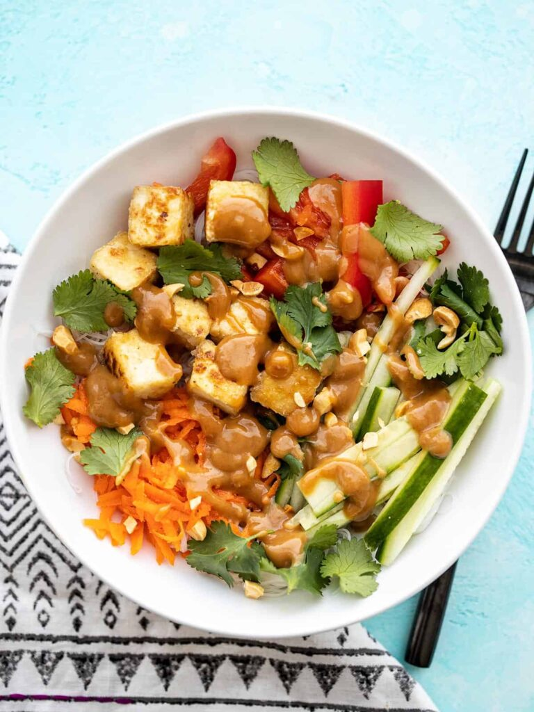

Home
Peanut Butter Noodles with Cripsy Tofu
|
 
|
"These Peanut Tofu Noodle Bowls feature light and airy rice noodles, cold crunchy vegetables, and a deliciously bright peanut lime dressing."
Peanut Butter Tofu Noodles recipe
Ingredients
Crispy Tofu
- 4 oz. extra firm tofu
- 1/4 tsp salt
- 2 Tbsp cornstarch
- 1 Tbsp cooking oil
Peanut Lime Dressing
- 3 Tbsp natural-style peanut butter
- 1 Tbsp brown sugar
- 1 clove garlic, minced
- 1/2 tsp grated fresh ginger
- 2 Tbsp lime juice
- 2 tsp soy sauce
- 1/4 cup neutral oil
Bowls
- >8 oz. rice noodles
- >1 red bell pepper
- >1 cucumber
- >1 carrot
- >1/2 bunch cilantro
- >1/4 cup chopped peanuts
Directions
- Start by pressing the tofu. Remove the tofu from the package, then place it on a rimmed baking sheet. Place a cutting board, plate, or another flat object over top, then place something heavy on top of that, like a cast iron skillet or a pot of water. Let the tofu sit with the weight on top for about 30 minutes to press the excess moisture out of the tofu.
- While the tofu is pressing, prepare the peanut lime dressing. Combine the peanut butter, brown sugar, minced garlic, grated ginger, lime juice, soy sauce and oil in a bowl. Whisk until smooth. Set the dressing aside.
- You can also prep the vegetables while the tofu is pressing. Slice the red bell pepper, slice the cucumber into thin sticks, shred the carrot using a cheese grater, and remove the cilantro leaves from the stems (or just roughly chop them).
- After the tofu has been pressing for about 30 minutes, pour off the excess water from the baking sheet. Transfer the pressed tofu to a cutting board, and cut the block into ½-inch cubes.
- Place the tofu cubes in a bowl or shallow dish and sprinkle with salt and cornstarch. Gently toss the tofu cubes until they are coated in cornstarch.
- Heat the cooking oil in a large non-stick skillet over medium heat. Once hot, add the tofu cubes and cook on each side until golden brown and crispy. Once crispy, remove them from the heat.
- Finally, cook the rice noodles. Bring a pot of water to a full boil, then add the noodles. Boil only for about three minutes, or the recommended time on the package. Drain the noodles in a colander and rinse briefly with cool water. Let the noodles drain well.
- To assemble the bowls, place ¼ of the noodles in the bottom of each bowl. Top with some bell pepper, cucumber, carrot, cilantro, and crispy tofu. Sprinkle some chopped peanuts over top, then drizzle with the peanut lime dressing. Enjoy!